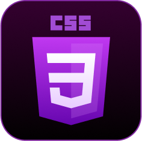
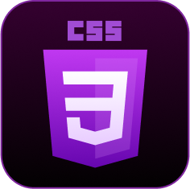

Ethan John
full-stack developer.
I’m Ethan John. I’m a passionate developer, fluent in a variety of technologies and frameworks.
I primarily build web-applications, but have recently been taking up audio programming,
primarily creating software to aid in music production
 

technologies which I primarily use